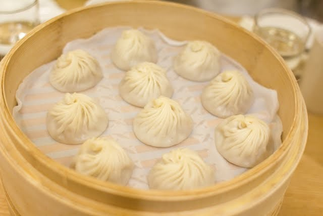

Soup Dumplings
🎥 Berikut adalah video tutorial cara membuatnya (klik untuk tampil/sembunyi)
🍜 Bahan-bahan (klik untuk tampil/sembunyi)
130 ml air hangat
1/4 sdt garam (opsional)
1 sdm jahe parut
2 batang daun bawang, cincang halus
1 sdm kecap asin
1 sdm saus tiram
1 sdt minyak wijen
1 sdt gula
1/4 sdt lada
1/2 sdt garam
10 gram gelatin bubuk (sekitar 1 sdm)
1 sdt kecap asin (opsional)
INSTRUKSI (klik untuk tampil/sembunyi)
Taburkan gelatin, aduk hingga larut sempurna.
Tuang ke dalam loyang dangkal.
Dinginkan di kulkas hingga mengeras.
Potong kecil-kecil seperti dadu (sekitar 1 cm) dan simpan dalam kulkas.
Uleni hingga kalis dan tidak lengket (sekitar 10–15 menit).
Diamkan selama 30 menit dengan ditutup plastik.
Gulung menjadi silinder, potong kecil-kecil, dan gilas jadi bulat tipis (sekitar 8–10 cm diameter).
Isi dengan 1 sdm isian daging dan beberapa potong gelatin kaldu.
Lipat dan cubit pinggiran kulit hingga membentuk lipatan seperti bunga (biasanya 12–18 lipatan).
Pastikan bagian atas tertutup rapat agar sup tidak bocor.
Kukus selama 8–10 menit di atas air mendidih (jangan buka tutup selama proses).
Sajikan panas dengan saus cuka hitam + irisan jahe.
Pastikan gelatin kaldu tetap dingin saat digunakan agar tidak mencair sebelum dikukus.
Sajikan segera agar sensasi kuah panasnya tetap terasa!